족발Jokbal
- 중
- 38,000
- 대
- 47,000
- 특대
- 55,000
내사랑족발ONCHEONJANGBoiled fresh
every day
2008년 부산시청 앞 본점에서 시작했습니다. 앞다리만 골라 매일 직접 삶아 온 그 족발을, 온천장점에서도 맛 보세요.
Since 2008. Front trotters only, boiled in-house every day. Now also serving in Oncheonjang, Busan.
오시는 길족발은 앞다리만 씁니다. 매일 매장에서 직접 삶고, 반찬과 소스까지 전부 직접 만듭니다.
옆으로 넘겨 보세요
두 가지를 골라 한 접시에. 둘이서 가장 많이 찾습니다.
2인 이상 주문하면 미니 막국수 서비스
점심특선 1인 가격입니다. 매일 11:30부터 14:30까지 주문할 수 있습니다. 족발, 보쌈, 불족발 중 하나를 고르면 메뉴마다 황태해장국, 계란찜, 공기밥이 함께 나옵니다.
같이 시키면 좋은 것들.
다녀간 손님이 직접 찍은 영상입니다. 눌러서 소리와 함께 보세요.
1층 홀. 나무로 짠 박스 안에서 먹는 밥집입니다.
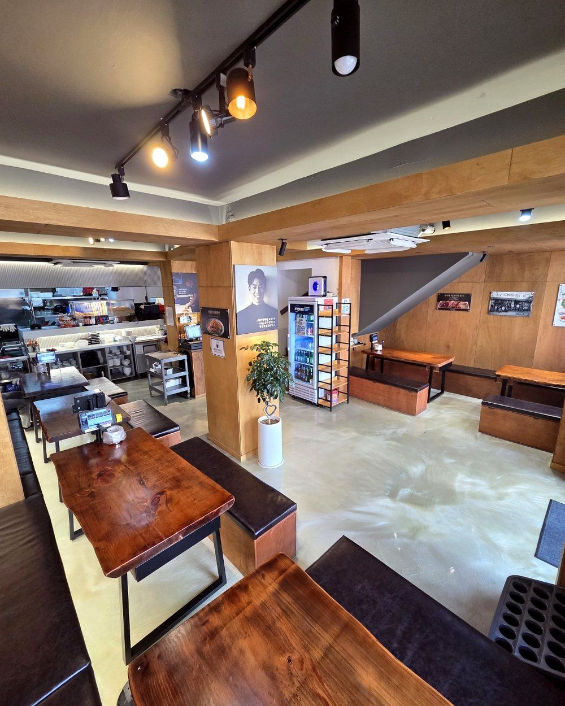
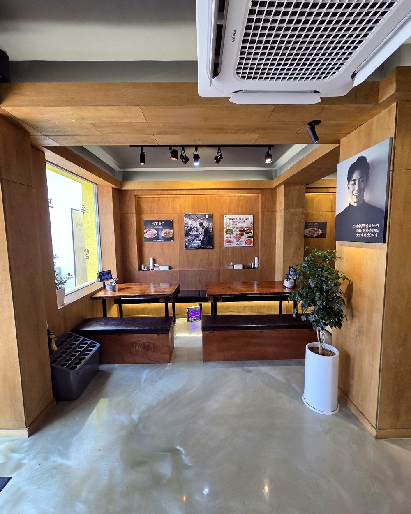
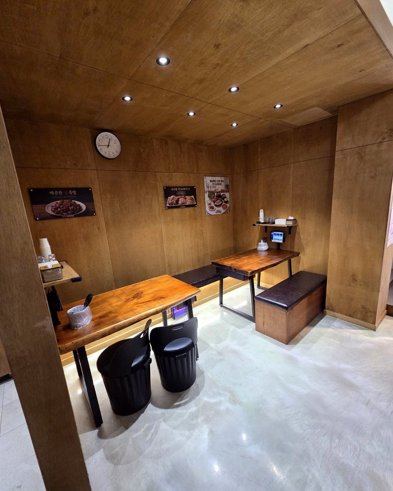
뒷자리는 노포 감성
홀 뒤쪽은 둥근 철판 테이블과 벽돌 바닥으로 꾸민 노포 자리입니다. 테이블마다 태블릿으로 바로 주문할 수 있습니다.
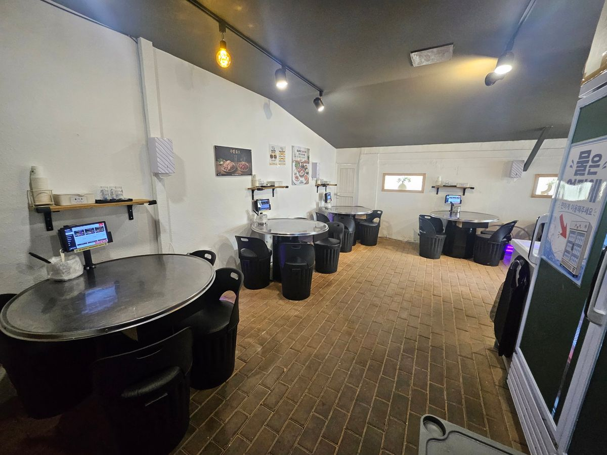
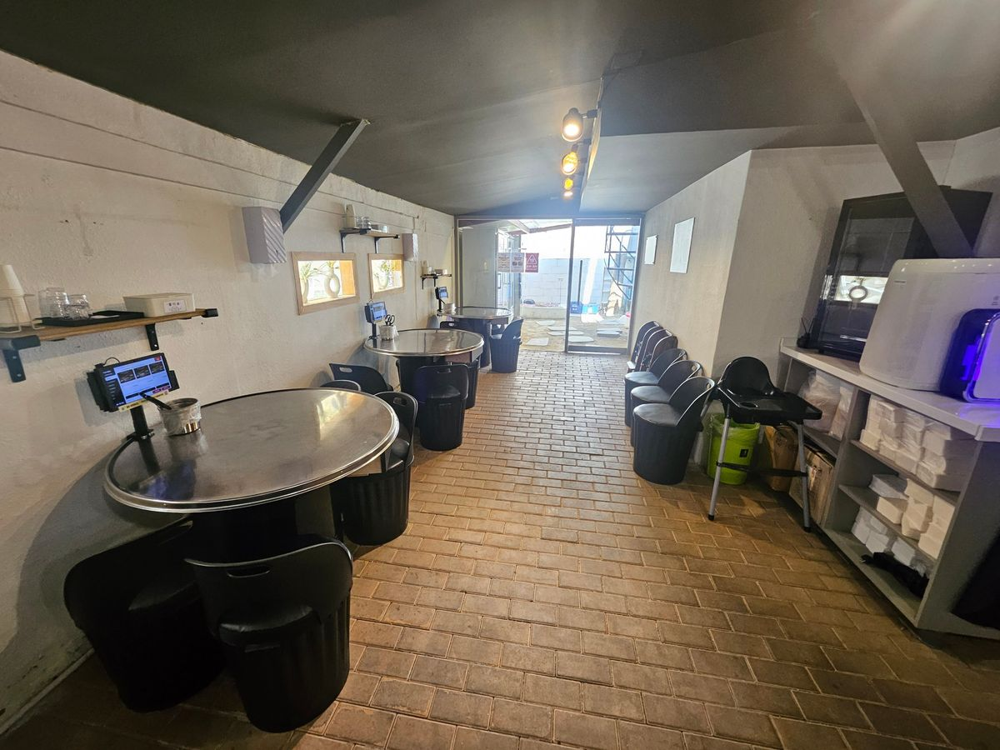
2층 놀이방, 내사랑친구집
식사하는 1층 홀과 층이 나뉘어 있습니다. 아이들은 2층에서 놀고, 어른들은 1층에서 편하게 드세요.
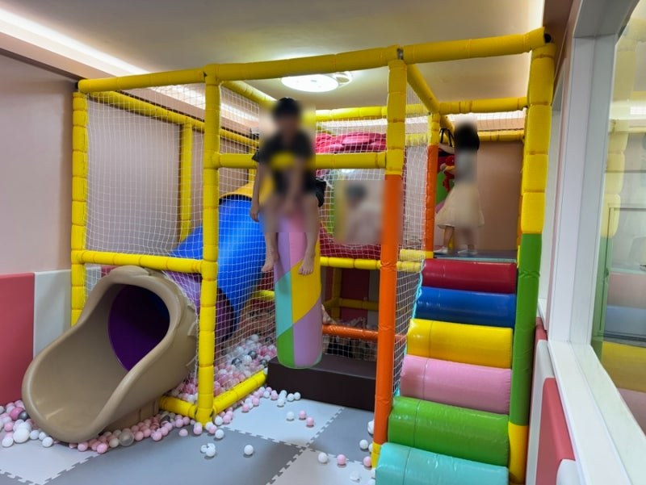
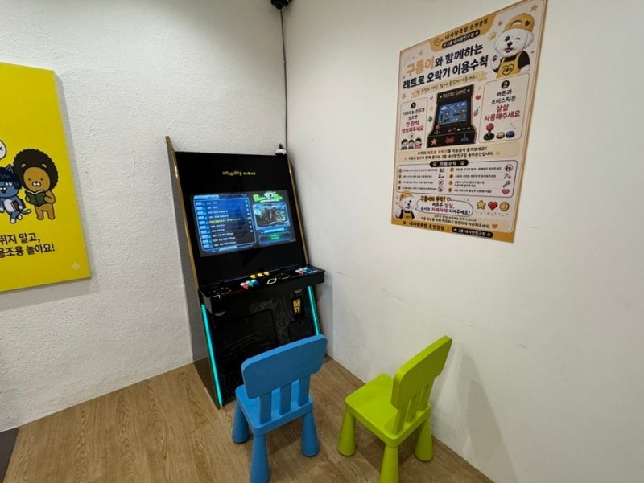
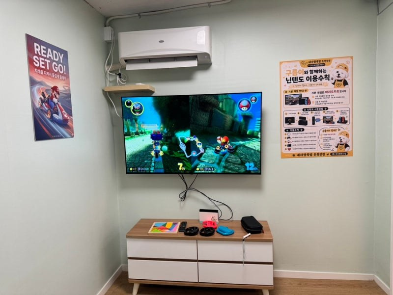
부산시청 앞 작은 가게에서 시작한 이야기
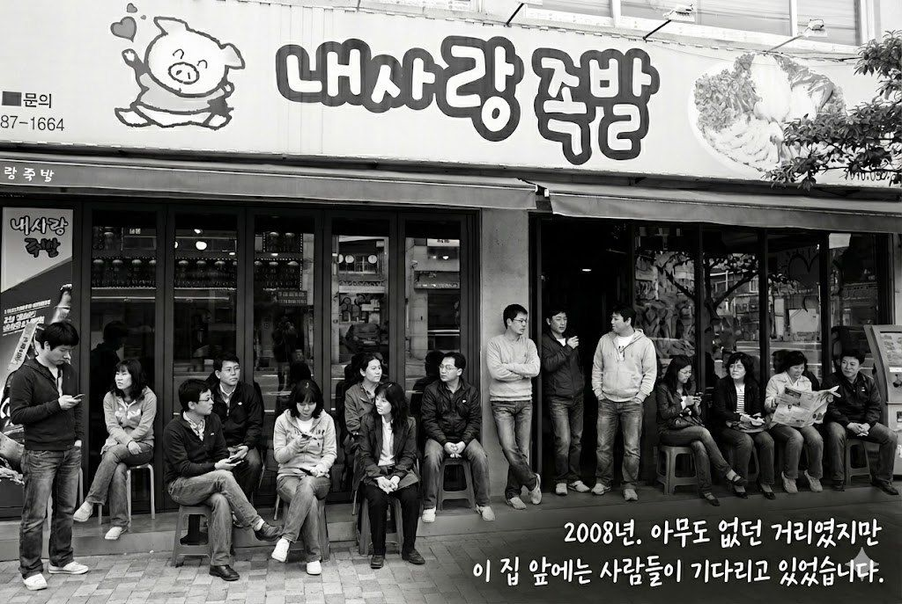
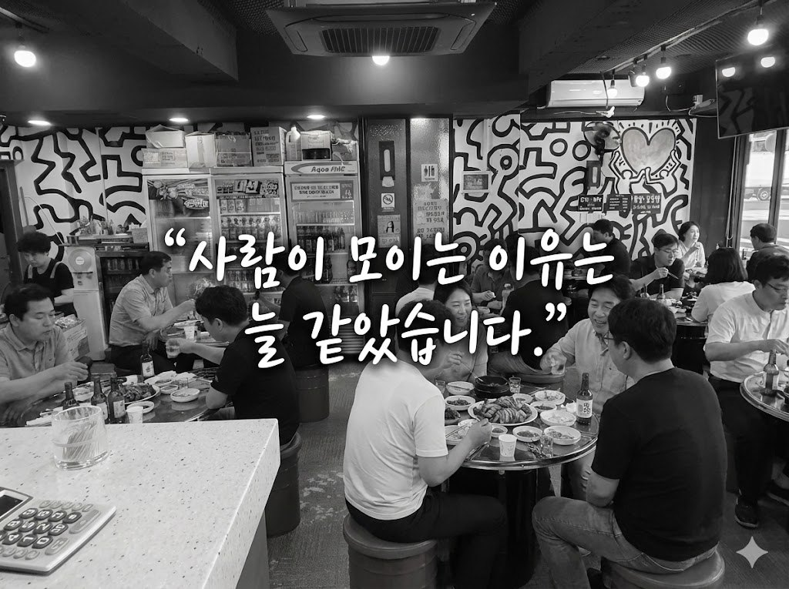
앞다리만 골라 매일 직접 삶는 방식은 2008년 그대로입니다. 그 족발을 2026년 2월부터 온천장점에서도 냅니다.
없습니다. 연중무휴로 매일 11:30부터 22:30까지 엽니다. 14:30부터 15:30까지는 브레이크타임입니다.
맵지 않습니다. 참숯에 구워 불향을 입힌 족발입니다.
365일 매일 11:30부터 14:30까지입니다. 1인 14,000원입니다.
네. 2층 놀이방(내사랑친구집)에 미끄럼틀과 볼풀, 레트로 오락기, 닌텐도 게임방이 있습니다.
포장 주문은 2,000원 할인됩니다. 포장 전용 메뉴인 실속족발(1인용, 23,000원)은 할인에서 제외됩니다.
네. 최대 30명까지 함께 앉을 수 있습니다. 인원이 많으면 미리 전화로 알려 주세요.
무료 주차장이 있습니다. 혼잡해서 자리가 없을 때는 근처 유료주차장을 이용해 주세요. 지하철은 1호선 온천장역에서 걸어서 10분쯤 걸립니다.
네이버 리뷰를 쓰시면 음료수 뚱캔 하나를 서비스로 드립니다. 작성 전에 직원을 먼저 불러 주세요.
Boiled fresh
every day
2008년 부산시청 앞 본점에서 시작했습니다. 앞다리만 골라 매일 직접 삶아 온 그 족발을, 온천장점에서도 맛 보세요.
Since 2008. Front trotters only, boiled in-house every day. Now also serving in Oncheonjang, Busan.
오시는 길족발은 앞다리만 씁니다. 매일 매장에서 직접 삶고, 반찬과 소스까지 전부 직접 만듭니다.
옆으로 넘겨 보세요
두 가지를 골라 한 접시에. 둘이서 가장 많이 찾습니다.
2인 이상 주문하면 미니 막국수 서비스
점심특선 1인 가격입니다. 매일 11:30부터 14:30까지 주문할 수 있습니다. 족발, 보쌈, 불족발 중 하나를 고르면 메뉴마다 황태해장국, 계란찜, 공기밥이 함께 나옵니다.
같이 시키면 좋은 것들.
다녀간 손님이 직접 찍은 영상입니다. 눌러서 소리와 함께 보세요.
1층 홀. 나무로 짠 박스 안에서 먹는 밥집입니다.
뒷자리는 노포 감성
홀 뒤쪽은 둥근 철판 테이블과 벽돌 바닥으로 꾸민 노포 자리입니다. 테이블마다 태블릿으로 바로 주문할 수 있습니다.
2층 놀이방, 내사랑친구집
식사하는 1층 홀과 층이 나뉘어 있습니다. 아이들은 2층에서 놀고, 어른들은 1층에서 편하게 드세요.
부산시청 앞 작은 가게에서 시작한 이야기
앞다리만 골라 매일 직접 삶는 방식은 2008년 그대로입니다. 그 족발을 2026년 2월부터 온천장점에서도 냅니다.
없습니다. 연중무휴로 매일 11:30부터 22:30까지 엽니다. 14:30부터 15:30까지는 브레이크타임입니다.
맵지 않습니다. 참숯에 구워 불향을 입힌 족발입니다.
365일 매일 11:30부터 14:30까지입니다. 1인 14,000원입니다.
네. 2층 놀이방(내사랑친구집)에 미끄럼틀과 볼풀, 레트로 오락기, 닌텐도 게임방이 있습니다.
포장 주문은 2,000원 할인됩니다. 포장 전용 메뉴인 실속족발(1인용, 23,000원)은 할인에서 제외됩니다.
네. 최대 30명까지 함께 앉을 수 있습니다. 인원이 많으면 미리 전화로 알려 주세요.
무료 주차장이 있습니다. 혼잡해서 자리가 없을 때는 근처 유료주차장을 이용해 주세요. 지하철은 1호선 온천장역에서 걸어서 10분쯤 걸립니다.
네이버 리뷰를 쓰시면 음료수 뚱캔 하나를 서비스로 드립니다. 작성 전에 직원을 먼저 불러 주세요.